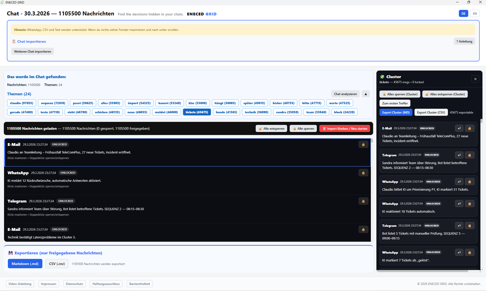

Find the decisions hidden in your chats.
Analyze large chat histories locally and uncover the topics, patterns and decisions that usually get lost.
ENECED GRID helps turn messy communication into structure — without uploading sensitive data to the cloud.
Important decisions are often made in chats. But after a few days, they disappear inside long threads, repeated discussions and unstructured communication.
ENECED GRID analyzes chat histories and reveals topics, patterns and decision-relevant messages — fully local and built for real communication data.
What ENECED GRID already does
The product works. The current focus is not fancy complexity — it is clarity, onboarding and making the workflow easier for real users.
See the product in action
This is the current beta interface showing how ENECED GRID turns a large chat history into visible topics, clusters and relevant messages.

Instead of scrolling endlessly through raw chat data, you get a structured view of the conversation.
- Detected topics at the top
- Selected cluster on the right
- Relevant messages in context
- Export options for useful results
- Built for large communication archives
Current beta focus
ENECED GRID is already stable as a product foundation. The main work now is improving first-time understanding and making the experience easier for non-technical users.
- Video guide inside the app
- First-start logic prepared
- Import finished + scroll hint visible
- UI improved for non-technical users
- Make onboarding even clearer
- Reduce friction after import
- Strengthen the “wow” moment after analysis
- Improve accessibility for first-time testers
ENECED GRID is currently shared manually with early testers. Request access to the Windows beta and help shape the next iteration with real feedback.
Request the Windows Beta